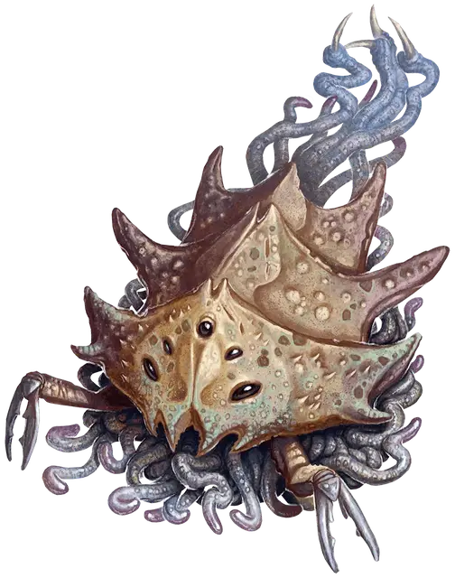

Ловчий падальщик
Carrion Stalker
Крошечный Монстр

Класс Доспеха 14 (природный доспех)
Хиты 35 (10к4 + 10)
Скорость 30 футов, копая 30 футов
| мод | спас | ||
|---|---|---|---|
| СИЛ | 6 | −2 | −2 |
| ЛОВ | 16 | +3 | +3 |
| ТЕЛ | 12 | +1 | +1 |
| мод | спас | ||
|---|---|---|---|
| ИНТ | 2 | −4 | −4 |
| МДР | 13 | +1 | +1 |
| ХАР | 6 | −2 | −2 |
Навыки Скрытность +7
Иммунитет к состояниям ослепление
Чувства пассивное Восприятие 11, чувство вибрации 60 футов
Опасность 3 (700 опыта)
Бонус мастерства +2
Действия
Мультиатака. Ловчий падальщик делает три атаки щупальцами. Если он прикреплен к существу, он может заменить одну атаку щупальцами на Выброс личинок, если таковой имеется.
Щупальце. . Рукопашная атака оружием: +5 к попаданию, досягаемость 5 фт., одно существо. Попадание: 5 (1к4 + 3) колющего урона, и ловчий падальщик прикрепляется к цели, влезая в её пространство. Будучи прикрепленным, ловчий падальщик перемещается вместе с целью и совершает с преимуществом броски атаки против неё.
Существо может действием попытаться отделить ловчего падальщика и заставить его переместиться в ближайшее свободное пространство, делая это при успешной проверке Силы Сл 11. В свою ход, ловчий падальщик может отделиться от цели, потратив 5 футов перемещения. Когда ловчий падальщик умирает, он отделяется от любого существа, к которому он прикрепился.
Выброс личинок (1/день). Ловчий падальщик совершает выброс личинок в сфере радиусом 10 футов с центром на себе. Каждое существо в этой области должно преуспеть в спасброске Телосложения Сл 13, иначе станет отравленным. Существо, отравленное таким образом, получает 7 (2к6) урона ядом в начале каждого своего хода, поскольку личинки заражают его тело. Существо может повторять спасбросок в конце каждого своего хода, оканчивая эффект на себе при успехе. Любой эффект, который излечивает от болезни или устраняет отравление, мгновенно убивает личинок в существе, прекращая их воздействие на него.
Если в результате заражения хиты существа уменьшаются до 0, оно умирает. Личинки остаются в трупе, и из одной из них через 1к4 недели появляется новый полностью взрослый ловчий падальщик. Любой эффект, который излечивает от болезни или устраняет отравление, наложенный на труп, мгновенно убивает личинок.
Описание
Цикл жизни ловчего падальщика начинается с бледной личинки, которая поражает труп. В течение нескольких недель эта личинка копошится, питается и растет, в конечном счете превращаясь в груду хитиновых клешней и щупалец. Когда взрослый ловчий падальщик замечает движение, он вырывается из вскормившего его трупа и атакует, намереваясь внедрить своих личинок в живое существо и начать жизненный цикл своего вида заново.
Не раз некроманты оживляли труп, кишащий личинками ловчих падальщиков. Хотя это может оказаться шокирующим и смертельно опасным, некоторые извращенные заклинатели разводят ловчих падальщиков в зомби. Внедрнные ловчие падальщики перемещаются в своих оживленных транспортных средствах, вырываясь вперед, как только они обнаруживают поблизости живых существ. Это уничтожает зомби, но выпускает на волю новое ужасное существо.
Ловчие падальщики зачастую живут в симбиозе с ползающими падальщиками [carrion crawler]. Ползающие падальщики [carrion crawler] не пожирают тела, зараженные ловчими падальщиками, но они часто подбирают их личинок, когда те копошатся в грязи. Затем ползающие падальщики [carrion crawler] распространяют этих личинок, они способны наводнить целые канализации, кладбища или поля сражений ловчими падальщиками . В свою очередь, ловчие падальщики не охотятся на ползающих падальщиков [carrion crawler].